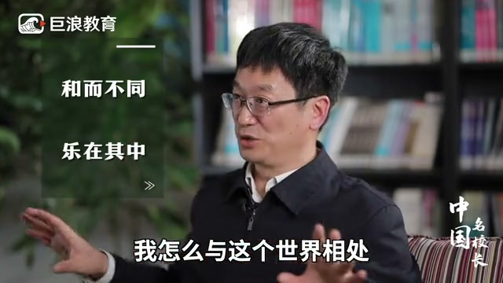
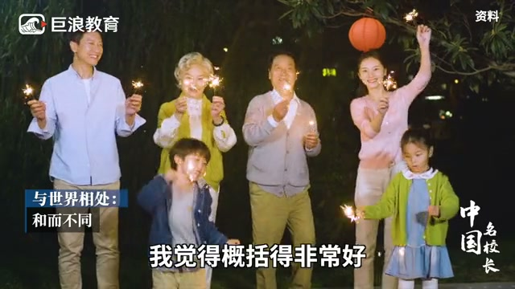
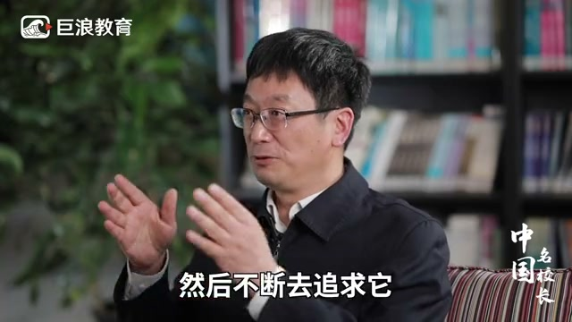
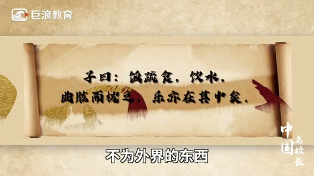
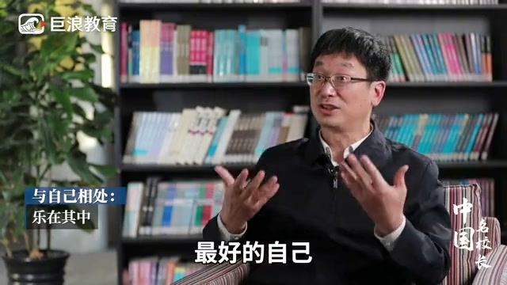

内容要点
「和而不同，乐在其中」——八个字，两句话，是一所学校的校风。讲者解释：「和而不同」是人与世界打交道的方式，接纳万事万物、尊重差异；「乐在其中」是人生观，一个人要找到自己最感兴趣的事并不断追求，追求本身的快乐才是最大的快乐。尽管与大家和而不同，也要成就最好的自己，同时乐在其中。
知识结构
校风是「和而不同，乐在其中」；和而不同是人与世界相处的智慧，世界不仅有我，还有太多万事万物。
人生观是乐在其中：找到最感兴趣的事不断追求，追求的快乐才是最大的快乐；尽管和而不同，也要成就最好的自己。
「和而不同」是和世界相处的方式，接纳差异；「乐在其中」是人生的活法，找到热爱并不断追求——追求的快乐才是最大的快乐。
00:00-00:20和而不同：与世界相处
我们的校风叫「和而不同，乐在其中」。「和而不同」，实际上是我与世界怎么打交道、怎么与这个世界相处的问题。
这个世界不仅是我一个人，有太多的万事万物。中国的智慧「和而不同」，我就是概括得非常好——这也就是我们所倡导的世界观。


00:21-00:43乐在其中：找到热爱的事
人生观是什么呢？就是「乐在其中」。一个人一定要找到自己最感兴趣的事情，然后去不断追求它。追求的快乐，才是最大的快乐。
哪怕是粗茶淡饭，我也乐在其中——不为外界的东西，更多是我内在的这种兴趣，然后去追求它。
我尽管和大家「和而不同」，但是我要成就最好的自己，我又是「乐在其中」的。



完整转录（22段）
以下文本由 Whisper medium 模型自动转录，可能存在少量识别误差，已尽可能修正。
我的校风叫何而不同
乐在其中
何而不同实际上是我与世界怎么打交道
我怎么与这个世界相处
这个世界不仅是我一个人
是太多的万事万物
中国的智慧何而不同
我就是概括的非常好
这也就是我们所倡导的世界观
人生观是什么呢
我就是乐在其中
一个人一定要找到自己最感兴趣的事情
然后去不断去追求它
追求的快乐才是最大的快乐
无与说粗茶淡饭
我也乐在其中也
也就是不为外界的东西
更多是我内在的这样一种兴趣
然后去追求它
我尽管和大家何而不同
但是我要承让我最好的自己
我又是乐在其中的